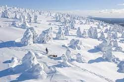
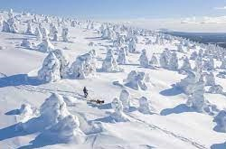

Rovanimemi talvella
Kampus
Kesä Suomessa
Syksy Suomessa

| Kurssi | Opintopisteet | Opettaja |
|---|---|---|
| Web-kehitys | 5cr | Aku Kesti |
| Projekti | 5cr | Maisa Mielikäinen |
| Matikka | 5cr | Sirpa Torvinen |
| Tietokonetekniikka | 5cr | Juha Petäjäjärvi |
Rovanimemi talvella
Kampus
Kesä Suomessa
Syksy Suomessa
| Jan | Feb | Mar | Apr | May | Jun | Jul | Aug | Sep | Oct | Nov | Dec |
|---|---|---|---|---|---|---|---|---|---|---|---|
| -18 | -11 | -5 | 2 | 5 | 14 | 18 | 19 | 15 | 5 | -3 | -10 |